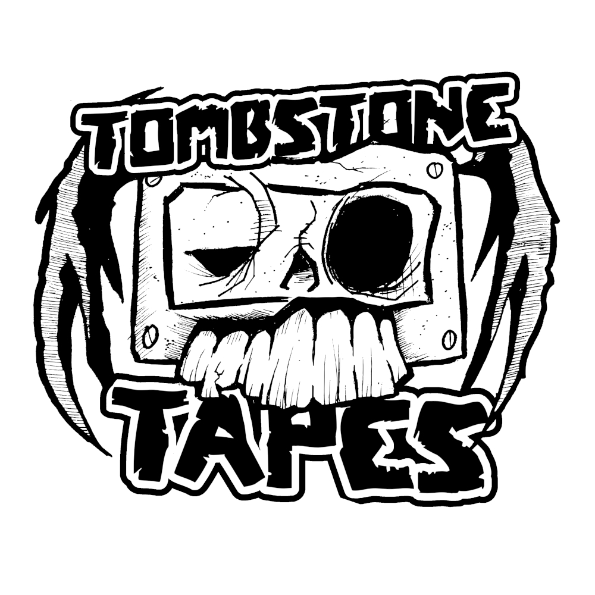

 Tombstone Tapes
Sometimes things become obselete, replaced by more modern alternatives. Cassette tapes were replaced by CDs. CDs were replaced by digital downloads. Digital downloads were replaced by streaming.
But just because something is obselete, doesn't mean it's not cool.
Cassette tapes play music for you using a magnetic strip. That's incredible.
Tombstone Tapes creates bespoke cassette tapes to remind you of that nostalgic past you had, all by hand. We've got The Sounds of Windows 98, Sega Megadrive soundtracks, and loads more come into stock.
Enjoy your tapes, give them as a gift, display them on your desk. Just don't forget to rewind them once you're done listening.
Cassette tapes
Check out our latest offering of nostalgic, hand made tapes below!
"The Sounds of Windows 98" - relive the days of Windows operating systems, and listen to the 3D Pinball Space Cadet soundtrack whilst you're at it.
"Alien 3 Soundtrack" - for fans of retro gaming, then this Sega Master System soundtrack is perfect to take you back to the past.